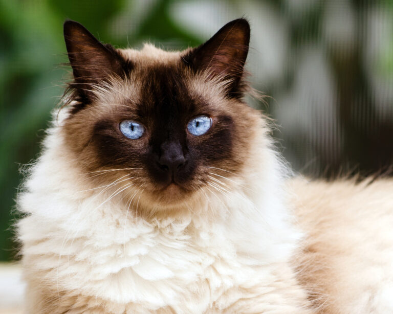
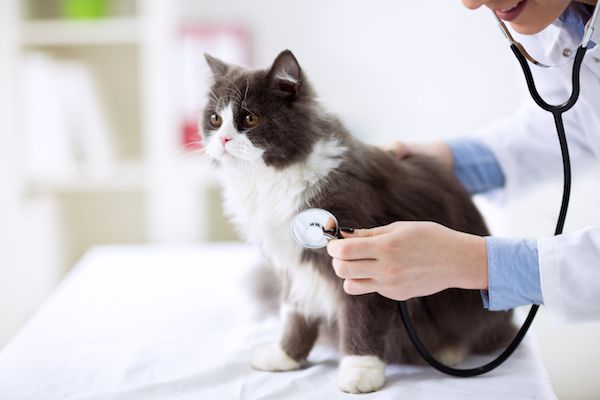

The Himalayan (short for Himalayan Persian, or Colorpoint Persian as it is commonly referred to in Europe), is a breed or sub-breed of long-haired cat similar in type to the Persian, with the exception of its blue eyes and its point colouration, which were derived from crossing the Persian with the Siamese. Some registries may classify the Himalayan as a long-haired sub-breed of Siamese, or a colorpoint sub-breed of Persian. The World Cat Federation has merged them with the Colorpoint Shorthair and Javanese into a single breed, the Colorpoint.
There are rumors that Himalayans descended from Pallas's cat, a small wild cat from central Asia with long fur and no spots or stripes. However, it's commonly believed the breed got its start at Harvard in the 1930s when researcher Clyde Keeler, with the help of enthusiast Virginia Cobb, conducted a study on combining Siamese and Persian traits. They named their first success Newton's Debutante. Keeler's research was picked up again in the 1950s as people longed for longhaired feline friends with those classic Siamese blue eyes and colorpoint markings.
In the U.K. in 1955, Brian Sterling-Webb successfully crossbred what he named Longhaired Colourpoints. Two years later in the U.S. Margaret Goforth had similar success and named the breed Himalayans after the Himalayan rabbit who has similar markings. It has been suggested that the Persian long-haired cats are descended from Pallas's cat, Felis manul, a wild cat that inhabits central Asia and which is unmarked with spots or stripes and has very long soft fur. There is, however, no osteological or other evidence for this and it is more likely that the long-haired domestic cats are the result of artificial selection for this characteristic by humans.
Separate US-based breeding efforts had begun around 1950, and a breeder known to sources simply as Mrs. Goforth received breed recognition from the Cat Fanciers' Association (CFA) near the end of 1957 for the Himalayan. Early breeders were mostly interested in adding Siamese colouration to long-haired cats, and therefore reinforced the stock by outbreeding to Persians only to retain the Persian trait dominance.
Like Persians more generally, the Himalayan tends to have a round (cobby) body and short legs, which makes it harder for them to jump as high as other cats do. Since the 1960s, however, some have more of a Siamese-like body.
Aside from those expressive blue eyes, a Himalayan's face is distinct in that it can either be traditional or extreme. Traditional, also called doll face, is round with a longer, lower nose. Extreme, or peke-face, is that adorable squashy look similar to that of a Pug.
Of course, the most noticeable attribute is a Himalayan's fine, glossy double coat with those quintessential colorpoints. The bulk of their body can range from white to fawn with the colorpoint markings coming in a wide array of hues, including:
And "longhair" isn't just a label with these silkies; it's a way of life. Himalayans sport a ruff around the neck, a deep frill between their front legs, ear and toe tufts, and a full tail.
Himalayans are remarkably pleasant. They are smart, affectionate, and devoted. Himmies consider their pet parent's lap to be a little piece of heaven, and while they can be left for long hours if you have to work, a Himalayan won't be afraid to tell you if you're neglecting them. Luckily, their meow has been described as melodious. These kitties can be shy, and they prefer a calm environment. They dislike loud noise and are timid around houseguests.
This breed may be quiet, but they sure are interesting! Check out these cool Himmy facts:
Due to their Persian ancestry, some Himalayans may have the gene that causes Polycystic kidney disease, (PKD); however, a genetic test can reveal which cats carry the PKD gene, so that they may be spayed or neutered.
Like many long-haired cats, Himalayans need to be brushed daily to keep their coats looking their best and healthiest. In addition, they may need their face wiped daily, depending on the cat. Bathing a Himalayan is also recommended by some breeders, to help reduce the amount of oil on the cat's fur and skin.
Himalayan Cat Breed: Everything You Need to Know:click here
Author: Ruiyan.Yang
RTU 2022